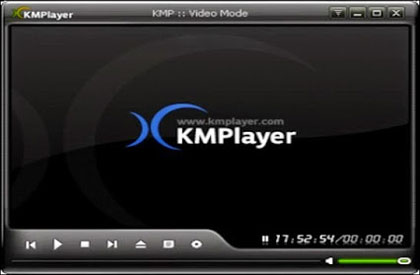

Tutorial
April 09, 2020Views : 3,487KMPlayer is a versatile media player which can play almost all file formats such as AVI, MKV, MPEG-1/2/4, WMW, MOV, Real Media, QuickTime and etc. It has an extra feature to play Incomplete or Damaged AVI file, Compressed Audio Album (zip, rar), Locked Media Files while downloading or sharing and so on. You can play any media file in KMPlayer without any separate codec because KMP has its own internal codecs. It also supports 3D, 4K, UHD and handles a wide range of subtitles and allows you to capture audio, video, and screenshots in many ways